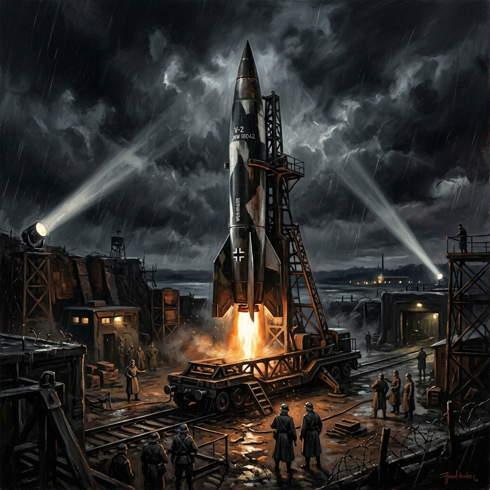
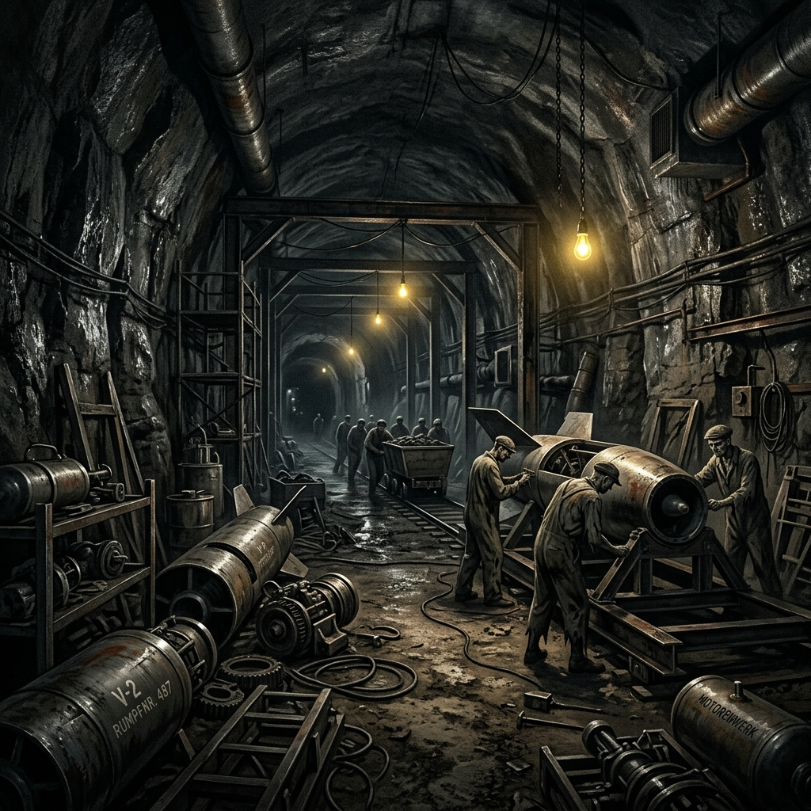

La Operación Paperclip y el Dilema Ético de la Carrera Espacial
1. Contexto Histórico: El Auge de la V2 y la Geopolítica del Terror
Durante las fases finales de la Segunda Guerra Mundial, el régimen nazi, acorralado y al borde del colapso militar, volcó sus últimos recursos en el desarrollo de las denominadas Wunderwaffen (armas milagrosas). Entre ellas, la joya de la corona tecnológica fue el cohete A4 (comúnmente conocido como V2), diseñado bajo la dirección técnica del ingeniero Wernher von Braun en el complejo militar de Peenemünde. La V2 representaba el pináculo de la ingeniería balística de la época: el primer objeto artificial en realizar un vuelo suborbital, capaz de sembrar la devastación en Londres o Amberes sin posibilidad alguna de interceptación.

Sin embargo, la inminente caída del Tercer Reich no supuso el fin de esta tecnología, sino el punto de partida de un nuevo tablero geopolítico: la Guerra Fría. Las potencias vencedoras, principalmente los Estados Unidos y la Unión Soviética, comprendieron rápidamente que la hegemonía mundial posterior al conflicto dependería del control del espacio aéreo y orbital. Quien dominara los cohetes balísticos no solo controlaría el lanzamiento de satélites y exploradores, sino también los vectores de entrega de las armas nucleares recién inventadas.
El espacio exterior dejó de ser un mero objeto de curiosidad científica para convertirse en el trofeo geopolítico definitivo. Representaba la demostración absoluta de la superioridad ideológica, científica y militar de un sistema sobre el otro. En este contexto de paranoia estratégica mutua y preparativos para un posible tercer conflicto mundial, la moralidad pasó a considerarse un lujo prescindible, allanando el camino para pactos de conveniencia con los artífices del horror nazi.
2. La Operación Paperclip: El Blanqueamiento del Pasado
La Operación Paperclip fue un programa secreto llevado a cabo por la Oficina de Servicios Estratégicos (OSS) de los Estados Unidos a partir de 1945. Su objetivo primordial era localizar, reclutar y trasladar a suelo norteamericano a más de 1,600 científicos y técnicos nazis. Para eludir la prohibición expresa del presidente Harry S. Truman de importar personas con vinculaciones nazis activas o sospechas fundadas de crímenes de guerra, los oficiales del servicio de inteligencia militar falsificaron, reescribieron y "blanquearon" sistemáticamente los expedientes biográficos de los científicos. A los perfiles aprobados se les colocaba un clip (paperclip) en la carpeta para indicar su idoneidad y libre paso hacia el servicio del gobierno estadounidense.

El aspecto más sombrío y cruel de esta operación se encuentra en la base física de esta tecnología: la fábrica de cohetes subterránea de Mittelwerk y el campo de concentración de Mittelbau-Dora en Turingia. Para evitar los bombardeos aliados, la producción de las V2 se trasladó a túneles excavados bajo las montañas, donde decenas de miles de prisioneros de guerra y opositores políticos fueron sometidos a regímenes atroces de trabajo esclavo.
Los prisioneros trabajaban y vivían en condiciones de hacinamiento absoluto en túneles polvorientos y oscuros, muriendo de inanición, tuberculosis, abusos físicos y ejecuciones sumarias. Se estima que cerca de 20,000 personas murieron en Mittelbau-Dora construyendo las V2, una trágica cifra que supera con creces el número de víctimas mortales causadas por el impacto directo de los cohetes en las ciudades objetivo. La tecnología espacial estadounidense que finalmente llevaría al ser humano a la Luna no nació de un laboratorio pulcro, sino de un pozo de sadismo y deshumanización sistemática donde Von Braun y su equipo supervisaban y seleccionaban la mano de obra esclava para sus proyectos.
3. Testimonio del Horror: Una Fuente Histórica Primaria
Para comprender verdaderamente la barbarie que financió y estructuró la creación del motor del cohete V2, es imperativo confrontar los testimonios de quienes sobrevivieron a las galerías subterráneas de Mittelbau-Dora. Haz clic en las pestañas a continuación para explorar la fuente directa y su análisis crítico.
"Los que estábamos abajo en los túneles sabíamos perfectamente que el progreso de la ciencia alemana se medía en nuestra sangre y en nuestros cadáveres amontonados. Los ingenieros y científicos civiles, vistiendo sus impecables trajes grises, caminaban a centímetros de nosotros mientras cargábamos las piezas de los cohetes. Nos miraban como si fuéramos espectros invisibles o simples herramientas de metal. Para el doctor Von Braun y su equipo de especialistas, nuestra vida no valía un solo tornillo del V2."
Jean Michel, Prisionero político francés y sobreviviente de Mittelbau-Dora
Esta fuente primaria es fundamental porque rompe la narrativa de la "neutralidad de la técnica". Desmitifica por completo la excusa de que los científicos alemanes eran meros investigadores aislados en torres de marfil y ajenos al sufrimiento humano. El testimonio demuestra la coexistencia directa de la ciencia avanzada con el sadismo concentracionario. Revela que el conocimiento científico desprovisto de principios humanistas se convierte inevitablemente en una herramienta de opresión y deshumanización sistémica.
4. Impunidad Bajo el Frío Manto de la Luna: Consecuencias Históricas
Tras su traslado a los Estados Unidos, Wernher von Braun experimentó una metamorfosis pública asombrosa. De ser miembro de las SS y director del complejo industrial esclavo en Mittelwerk, pasó a convertirse en un carismático "héroe americano", promotor de la exploración espacial en televisión junto a Walt Disney y director de la NASA. Bajo su liderazgo técnico directo, se construyó el gigantesco cohete Saturno V, la obra maestra de ingeniería que impulsó a la misión Apolo 11 hacia la Luna en 1969.
Esta transición ejemplifica cómo la Guerra Fría normalizó y consagró la impunidad histórica. El pragmatismo estadounidense priorizó la ganancia tecnológica por encima de la justicia internacional de Núremberg. Al blanquear los expedientes de Von Braun y su equipo (como Arthur Rudolph, director del proyecto Saturno V, y Kurt Debus, director del Centro Espacial Kennedy), el gobierno de los Estados Unidos envió un mensaje inequívoco: los crímenes de lesa humanidad son perdonables si el infractor posee conocimientos útiles para el interés nacional.
Este "triunfo" nos deja una lección histórica profundamente desgarradora: la memoria de las víctimas de Dora fue sepultada bajo el polvo lunar y el clamor del nacionalismo triunfalista. La epopeya del Apolo 11, celebrada mundialmente como el mayor logro de la humanidad, tiene cimientos indisociables del dolor extremo y el trabajo esclavo, demostrando cómo los imperativos políticos pueden reescribir la moral global y santificar a los cómplices de la barbarie.
5. Conexión con el Presente: Los Límites Éticos Innegociables
El dilema ético de la Operación Paperclip resuena con una vigencia alarmante en el siglo XXI. Hoy en día, nos enfrentamos a fronteras tecnológicas que desafían nuestra comprensión moral: la inteligencia artificial aplicada a sistemas de armas autónomos, la edición genética humana con fines eugenésicos, el desarrollo de herramientas de vigilancia masiva o el extractivismo algorítmico de datos privados. Al igual que en la década de 1940, los desarrolladores de estas tecnologías operan a menudo bajo el cobijo de corporaciones transnacionales o agendas estatales de seguridad nacional, alegando neutralidad o inevitabilidad en el progreso.
El progreso tecnológico no puede considerarse un valor absoluto por encima de los derechos humanos y la dignidad. La lección fundamental de la alianza tácita entre la ciencia espacial y el horror nazi es que la técnica pura no posee brújula moral propia. Si aceptamos que el avance científico justifica cualquier medio, abrimos la puerta a una nueva barbarie de alta tecnología. Ningún descubrimiento científico, ninguna conquista del espacio, ningún algoritmo de inteligencia artificial o avance biotecnológico puede justificar la explotación, la instrumentalización o la deshumanización de una sola vida humana.